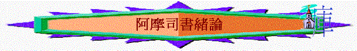

一.作者----阿摩司
「當猶大王烏西雅，以色列王約阿施的兒子耶羅波安在位的時候，大地震前二年，提哥亞牧人中的阿摩司得默示論以色列。」摩1:1
「阿摩司對亞瑪謝說：「我原不是先知，也不是先知的門徒（原文作兒子）。我是牧人，又是修理桑樹的。耶和華選召我，使我不跟從羊群，對我說：『你去向我民以色列說預言。』」7:14-15
1.猶太地的牧羊人
〜提哥亞的位置約距離耶路撒冷南約20公里，他本來在此地作牧羊的人，但神不因為他卑微而不用他
2.被神所召的先知
～神選召他成為先知，神的代言人，是向以色列發預言的
3.為神撇一切的人
～他撇下他的工作，他的家鄉，往北國作宣召
4.有神負擔的人
～阿摩司的意思是「神負擔」，他是有神的負擔的，知道以色列的命運，也明白神要他們回轉的心腸，也知道自己一生擔負神的使命
5.有神支持的人
～阿摩司另一意思是「神支持」，他雖承擔這不討好的使命(發預言攻擊列國及選民)但神的選召，神的說話，神自己卻成為他的支持
二.時間
～南國猶大王烏西雅及北國以色列耶羅波安在位的時候
～「大地震前二年」，似乎也是神透過先知對人的警號
三.對象
～主要是北國以色列，但也題及南國猶大及列國的問題及結局
四.背景
1.強盛安逸的環境
「猶大眾民立亞瑪謝的兒子烏西雅（又名亞撒利雅）接續他父作王，那時他年十六歲。」代下26:1
「烏西雅行耶和華眼中看為正的事，效法他父亞瑪謝一切所行的；
通曉神默示，撒迦利亞在世的時候，烏西雅定意尋求神；他尋求耶和華，神就使他亨通。」代下26:4-5
「又在耶路撒冷使巧匠做機器，安在城樓和角樓上，用以射箭發石。烏西雅的名聲傳到遠方；因為他得了非常的幫助，甚是強盛。」代下26:15
「猶大王約阿施的兒子亞瑪謝十五年，以色列王約阿施的兒子耶羅波安在撒瑪利亞登基，作王四十一年。他行耶和華眼中看為惡的事，不離開尼八的兒子耶羅波安使以色列人陷在罪裡的一切罪。
他收回以色列邊界之地，從哈馬口直到亞拉巴海，正如耶和華以色列的神藉他僕人迦特希弗人亞米太的兒子先知約拿所說的。因為耶和華看見以色列人甚是艱苦，無論困住的、自由的都沒有了，也無人幫助以色列人。耶和華並沒有說要將以色列的名從天下塗抹，乃藉約阿施的兒子耶羅波安拯救他們。耶羅波安其餘的事，凡他所行的和他的勇力，他怎樣爭戰，怎樣收回大馬色和先前屬猶大的哈馬歸以色列，都寫在以色列諸王記上。」王下14:23-28
「國為列國之首，人最著名，且為以色列家所歸向，在錫安和撒瑪利亞山安逸無慮的，有禍了！」摩6:1
～當時北國受耶羅波安管治，國家強盛，有勇士，沒戰亂，人民生活安定及富裕，但在人最平安穩安的日子，卻出現很大的危機
2.犯罪敗壞的劣況
A.不公義
「耶和華如此說：以色列人三番四次的犯罪，我必不免去他們的刑罰；因他們為銀子賣了義人，為一雙鞋賣了窮人。他們見窮人頭上所蒙的灰也都垂涎，阻礙謙卑人的道路。父子同一個女子行淫，褻瀆我的聖名。」2:6-7
B.滿淫亂
「他們見窮人頭上所蒙的灰也都垂涎，阻礙謙卑人的道路。父子同一個女子行淫，褻瀆我的聖名。」2:7
C.拜偶像
「你們抬著為自己所造之摩洛的帳幕和偶像的龕，並你們的神星。」5:26
五.主題----神的吼叫
「他說：耶和華必從錫安吼叫，從耶路撒冷發聲；牧人的草場要悲哀；迦密的山頂要枯乾。」1:2
「獅子若非抓食，豈能在林中咆哮呢？少壯獅子若無所得，豈能從洞中發聲呢？」3:4
「獅子吼叫，誰不懼怕呢？主耶和華發命，誰能不說預言呢？」3:8
「想望耶和華日子來到的有禍了！你們為何想望耶和華的日子呢？那日黑暗沒有光明，景況好像人躲避獅子又遇見熊，或是進房屋以手靠牆，就被蛇咬。」5:18-19
「耶和華必如獅子吼叫，子民必跟隨他。他一吼叫，他們就從西方急速而來。」何11:10
「耶和華必從錫安吼叫，從耶路撒冷發聲，天地就震動。耶和華卻要作他百姓的避難所，作以色列人的保障。」珥3:16
～神要向以色列的吼叫，來表達
1.神的烈怒
～向人發怒，為何發怒？一定有原因，是人的敗壞，人的罪行令神要傾倒祂的怒氣
2.神的攻擊
～吼叫也表達神對世人及選民將要帶來的攻擊與審判(如獅子攻擊人一樣，是黑暗的日子)
3.神的警告
～也是向世人提出警告，人當預備回轉迎見神，也喚醒他們沉睡無知的心
4.神的呼喚
～也是神向選民的呼喚，望他們有一日歸回神
六.大綱
1.神吼叫(1-6)
A.向列國吼叫(1-2)
B.向以色列吼叫(3-6)
2.人回應(7)
A.先知的回應
B.首領的回應
3.終結局(8-9)
A.選民的結局
B.列國的命運